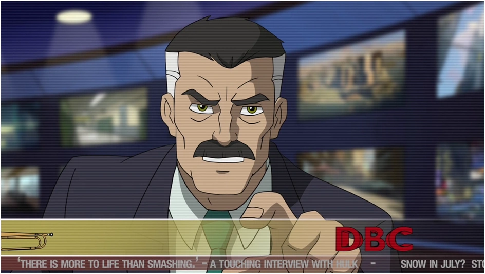

Dieciséis imágenes de las cuatro temporadas: el primer equipo de S.H.I.E.L.D., los Web-Warriors,
los villanos que se les cruzaron y el Spider-Verso entero. Filtrá por grupo o hacé clic en
cualquiera para verla en grande.
Salen del wiki The Daily Bugle y pertenecen a Marvel Animation y Disney XD. Están
agrupadas por tema para que sea más fácil encontrar lo que buscás.
Clic para ampliar
←→ para moverte
Esc para cerrar
En el celular, deslizá
Mostrando las 16 imágenes

J. Jonah Jameson en el Daily Bugle
¿Tenés una foto mejor?
En la serie, Peter se gana unos pesos vendiéndole fotos de Spider-Man a J. Jonah Jameson,
que después las usa para cargarlo en la tapa. Acá no hay tapa ni sueldo, pero si ves una
imagen de la serie que merece estar en esta galería, mandánosla: la verificamos y la sumamos.